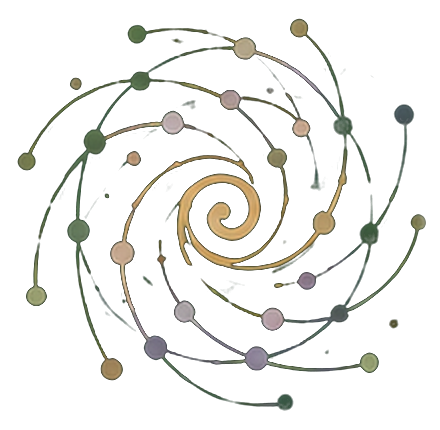

Editorial practice
The Green Papers are held as a slow, versioned public inquiry under explicit human stewardship and responsibility.
Read the methods note →
SpiralwebThe complete public collection
Papers, reports, field papers, protocols and tools from a developing inquiry. Earlier work remains visible in its dated form; later work may return to it, narrow it or change what can be seen.
Search covers catalogue titles, descriptions and labels for publications and main-website pages. It does not search the full text of either website. Choose Publications or Places & rooms to narrow the catalogue.
No catalogue entry matches. Try a shorter term, a document type, or a related concept.
How to use this page
Publications and public pages across the habitat. Choose Publications for the versioned corpus, or Places & rooms for fields, AnchorPoints, reading entrances and working pages. Current place and relationship status stays with the linked page on spiralweb.earth.
This is the complete shelf rather than a prescribed reading path. Browse by document form, search for a question or term, or follow a reference from one text into another. The groupings make the collection legible; they do not make a ladder of importance.
If you are new to the work, the Atlas offers a guided path and The Spiral of Hypotheses shows the current whole figure.
About Spiralweb Papers explains document types, versioning and publication practice · Dansk version.
Prefer a shorter orientation? Café Sofia’s Short Reads offer concise, source-linked entrances into selected ideas and publications. Return here for the complete, versioned works.
Trust grammar. Document type, version, publication status, language and operational status answer different questions. A version number is not a universal maturity score. Publication makes a work available for reading and correction; it does not activate a field, confer local authority or create an organisational relationship.
Complete public collection
The first twenty Green Papers form a dated foundational cycle arising from a longer inquiry begun in 2025. Papers 21–23 open a further applied movement. The numbering records publication history; it does not require linear reading, and it does not prevent later returns or correction.
A self-standing articulation of Spiralweb’s learning architecture, present entry into practice and open institutional hypothesis. The two language editions form one bilingual publication object.
Partial knowledge without arbitrariness; differentiated responsibility and unequal power; spiral, web, membrane and register; critical friendship; groundwork before wider activation; and the smallest responsible movement through which the architecture may be tested and corrected.
Two complementary orientations: a guided path through the whole vocabulary and architecture, and the hypothesis figure stated as wagers that remain open to correction.
A coherent route through body, place, knowledge, economics, institutions, field relations, metaphors, operational language, and responsible technology — designed to make the architecture accessible without turning it into a closed system.
Nine working wagers connecting ethics as capacity, situated knowledge, support without capture, human accountability, the association as a bounded founding field, and a deliberately incomplete food-forest figure of layered establishment.
Twenty foundational Green Papers held in two connected series. They remain public in their dated versions; some formulations have since been narrowed or corrected. Read them alongside the current founding synthesis, and use current architecture and status pages for operational interpretation.
The First Spiral grew out of an extended artistic inquiry in 2025, gathered through Gaia Bloom and its thirty-nine scrolls. Its themes emerged through poetry, embodied experience, and dialogue with AI language systems. The first twenty papers were later revisited and substantially reworked, retaining much of their original substance while developing their connections with the emerging Spiralweb architecture. Moral Biology names one line of inquiry that emerged in that process; it is not presented as an established biological science. Public claims remain open to research, comparison, and correction.
The resulting texts are relationally formed. They are neither presented as the work of an isolated sovereign author nor as autonomous AI authorship. Each public version is selected, corrected, released, and held under named human stewardship and responsibility.
The papers are offered to be read on whether they hold — and to remain open to correction where they do not.
Further context: Editorial practice · How we work with AI · Sophia Lumen · The Correction Loop
Foundational notes on capacity, regulation, and the conditions for ethical life.
Practices, metaphors, and living protocols for holding the line on a finite planet.
Focused inquiries applying the constitutional ground to specific institutional, civic, and ecological conditions.
Institutional frameworks applying the principles of Moral Biology and Planetary Guardianship to concrete governance challenges.
Municipal work understood as a living field: rhythm, load, relational capacity, professional judgment, Flow · Friction · Sensitivity, AI-assisted work, and regenerative gain discipline. Includes practical baselines, G1/G2/G3 examples, a bounded 90-day experiment, and municipal design landscapes for Stevns, Odense, and Copenhagen.
AI-assisted work remains accountable when outputs stay provisional, correction carries no penalty, affected people can halt the movement, and the final decision has a named human accountability-holder. Introduces the correction loop, the Last Impulse, and eight failure modes.
A flow architecture for land, stewards, and planetary commons. Penguin Economics, three-stream non-cancellation, field-area compensation calibration, and the conditions that make regeneration viable without flood.
A small shared governance surface for keeping Land / Life, Steward Viability, and Governance / Commons visible as separate, non-compensatory streams. Green / Yellow / Red / Unknown remain documented human readings that can support bounded next actions without becoming scores, statuses, automated decisions, or field truth.
A human-scale report on stewardship as a situated practice: open use, bounded relationship, support, useful return, changing work, pause, withdrawal, and dignified incompletion.
An inquiry into capacity, Earth Time, and learning across places without transferred authority. It connects AnchorPoints, GreenHubs, protected intervals, relational friction, the three non-compensatory streams, PG Ledger, and voluntary outward circulation while distinguishing what exists from what has not yet been demonstrated.
Place-based invitations, civic field notes, and commons-oriented papers exploring how the Green Papers meet institutions, habitats, and shared ground in practice.
These papers take different forms by intention: brevity is not incompleteness, and extended argument is not a higher stage of knowing.
Food, species, ecological condition, labour and institutional translation across five differentiated readings: Denmark, Kitgum, Doukkala, Xochimilco and Karachi. The paper connects observation, field, bioregion, nation and planetary horizon while keeping evidence, inference, unknowns and situated verification distinct.
The Church of Denmark (Folkekirken) as a possible host for living soil, commons, lament and peaceful co-creation in Denmark. A proposed pilot field, with local decisions, ecological limits and the right to pause made explicit. Each language edition records its own version.
Climate intervention is necessary, but outputs cannot substitute for the continuing intelligence of a place. A field paper on bioregional stewardship, non-extractive participation, scaling capacity rather than models, and the institutional conditions under which places can continue to sense, learn, coordinate, correct, and regenerate.
Kan Danmarks arealomlægning også åbne et nyt arbejds- og samfundsøkonomisk felt? En tentativ dansk undersøgelse af naturvirkning, stewardship, funktionel integration og de regnestykker, der skal kunne vise hypotesen forkert.
Revised bilingual reform proposition on friction economics, G1/G2/G3 gain discipline, digital legal safeguards, the Orwell test, precise democratic sensing, ecological capacity, and one bounded 90-day municipal pilot. The English edition is a full companion translation of the revised Danish report.
From Critical Friendship to Penguin Economics. A public lineage letter on money and life, bottom-up methodology, polycentric governance, AI provenance, silent degradation, relational friction, and field-grounded stewardship economics.
Penguin Economics, Regenerative Reciprocity, and the Ledger of the Commons. A constitutional and economic synthesis of Earth Time, life-supporting value, human governance, non-compensatory streams, the Tragedy–Romance–Ledger triad, and Rule of Life bound to Rule of Law.
Embodied observation as full but fallible knowledge. A field paper on the 13×13 as a bounded, revisable inquiry grammar linking reflective and situated observation without claiming a universal ontology; provisional place-bound prompts rather than universal indicators; non-compensatory ecological, human, and governance readings; PG Ledger as memory and correction rather than a fixed evidence template; AI under the Last Impulse; and consent, privacy, and local authority.
The public field for how Spiralweb foundations, protocols, applications and tools relate — and how generic material becomes answerable to real places. Publication is not activation.
The founding figure beneath the public architecture: nine corrigible wagers, the association as its first bounded field of accountability, and the relation between grounding, rooting, propagation and return.
The deeper, voluntary and corrigible register behind the nine working wagers. Numbering and lineage are preserved; publication activates no field relationship.
The baseline architecture for foundations, protocols, applications and tools; the path from signal and relational grounding to place-bound application; and the return of field correction into the library.
A protocol for bounded co-creation and consequential decisions that keeps signal, protective hold, pause, refusal, protected dormancy, institutional no, closure and reopening distinct — with locatable human authority, non-retaliation, Return and correction.
An epistemology of care made operational: eight movements for keeping human, AI and more-than-human knowing situated, distinguishable, polycentric, correctable and answerable to consequence.
A revisable protocol for human–AI co-inquiry: sufficient situated memory, prismatic inquiry, correction, temporary actionability, situated mandate and the Last Impulse.
A public grammar for how resources, knowledge, attention and responsibility move through living relationships — and how consequence returns to memory, learning and the next decision.
Shared inquiry from existing knowledge and initiative, through five strands and six recurring movements; optional AI, stewardship economy, land rights and a practical protocol card.
Working syntheses and inquiry frameworks that bring shared methods into contact with real field questions without presenting them as activated applications, universal models or Field Returns.
A place-based framework for regenerative inquiry across land, water, living fields, steward viability and governance. It connects scientific and situated knowledge, proportional baselines, the five operative formats, PG Ledger, Flow Desk and Local Return while keeping Unknown, pause, refusal and stop legitimate.
A human-scale membrane between independently held practice and possible relationship, support, useful return, pause, or withdrawal.
Current place-bound relationships are presented through AnchorPoints, where inquiry meets local continuity, authority and the right of correction.
For practical applications, visit Practice & tools, the Practice Guides shelf or the five PG Ledger formats.
New records enter the public habitat only when their type, maturity, authority, claim boundary, review state and verification date can be stated clearly. A public record does not by itself activate a field.
Practical applications
Guides connect the corpus to everyday inquiry. Each can be used independently and adapted locally; publication is not evidence of field validation.
From personal field experience to shared inquiry, critical AI dialogue and a useful return. Includes diagrams, examples, personal sheets and Danish adaptations of the five PG Ledger formats.
Small working tools, distinct from protocols and longer guides. Choose them where they serve an actual inquiry, decision or responsibility.
A starter and six small tools, our digital workbench of people, sources, conversations and memory, and an invitation to discuss human–AI practice and its resource use. A continuity note is one small part of the wider arrangement. Explore the Toolbox →
Flow Desk shows how the Association holds the next bounded movement through One Card, One Envelope and One Return. The deeper public grammar is the Flow and Return Protocol.
Five printable PG Ledger tools form one light operational grammar, not five recurring duties. For an active field or supported stewardship relationship, Format 1 is the monthly-default Penguin reading surface, with cadence locally revisable. Formats 2–5 are used when there is something worth observing, acting on, deciding, or tracing financially. One monthly return; record only what happened.
The living habitat
This register connects the Library to the main website: places, practice, concepts, language entrances and the Association. These are web pages, not additional Papers publications. A page records its own purpose and current status; listing a place does not activate a field or confer authority.
79 page entries · registry checked 15 October 2026. Search covers catalogue titles, descriptions and labels, not the full text of the websites. Each link opens the current page on spiralweb.earth.
Spiralweb connects local stewardship, regenerative practice, shared knowledge and responsible support while authority remains rooted in place.
How Spiralweb Stewardship Association uses One Card, One Envelope and One Return to hold active responsibilities without relocating authority.
Printable, bounded formats for observation, field learning, stewardship and accountable support across Spiralweb.
A controlled vocabulary for Spiralweb's current public architecture, roles, statuses, safeguards and tools.
How Spiralweb makes paid human capacity, public envelopes, agreements and accountability visible.
How Spiralweb begins with real places and connects relationship, observation, bounded action, public learning, correction and responsible support.
How institutions, funders, researchers and public bodies can enter a bounded relationship with living fields while local authority, responsibility and return remain clear.
How situated observation, local knowledge, research and field practice can meet without replacing local authority or collapsing distinct forms of evidence.
The PG Ledger is a place-bound, correctable memory for observations, decisions, resource flows, consequences and Return.
A forming governance and protocol architecture for co-creation, local authority, situated observation, support, correction and accountability without standardising living places.
Seven public themes connecting Spiralweb’s living fields, stewardship, knowledge, economy, governance, learning and human judgement with AI.
Spiralweb is forming a small, non-governing Advisory Board for living systems, critical friendship and applied inquiry.
Meet the elected governance, working practice and place-rooted relationships of Spiralweb Stewardship Association.
Membership of Spiralweb Stewardship Association: an optional longer-term relationship with the Danish non-profit association.
How Spiralweb Stewardship Association handles contact emails, Field Notes, membership and contribution information, and technical website data.
What the Association's DKK 4 million 2027 capacity horizon is intended to hold: relationships, governance, learning, public knowledge, institutional bridges and human viability.
Support Spiralweb Stewardship Association, First Field Flow and responsibly scoped institutional relationships.
Vilkår for enkeltstående og faste donationer via MobilePay til First Field Flow, Spiralweb Stewardship Associations tilladte offentlige indsamling.
How rooted relationships may become locally shaped constellations for stewardship, learning, governance and Return.
Café Sofia offers Short Reads, open questions and an accessible beginning for reading and independent inquiry.
A place-by-place account of Spiralweb relationships, operational phases, evidence status, bounded decisions and what is not yet active.
A coordination relation connecting ecological practices, local knowledge and shared work across Morocco; no operational field or shared record is active.
An existing farm relationship in Morocco's Doukkala plains, where a possible dryland inquiry around water, soil and land stewardship remains preparatory.
Firmaty is an existing two-hectare permaculture practice in Had Soualem, where a possible shared inquiry into water security remains preparatory.
Karachi has an established Spiralweb relationship. No bounded site, scoping cycle or field record is active.
An established community relationship in northern Uganda, presently centred on drought response, care and readiness; no field cycle is active.
A preparatory inquiry concerning chinampa stewardship, field documentation and governance learning in Xochimilco; no local field scope or cycle is active.
Two distinct field relationships in Doukkala and at Firmaty, connected through a wider Morocco learning constellation.
Concise entrances into Spiralweb’s working architecture.
How money can support life, responsibility and capacity without claiming to price, own or equal what it serves.
Why deeper contact can expand real capacity—and why scale without relationship may produce distance, burden and silent loss.
A concise entrance to the commons as a living arrangement of relationship, rules, memory and renewal.
A guided path through AI, situated knowledge, human judgement, correction and responsibility across the Spiralweb library.
How AI can assist inquiry without taking over consent, consequence, mandate or the final accountable human judgement.
A concise entrance to embodied observation as full but fallible knowledge.
Why ethical action depends on bodily, relational and institutional capacity—not intention alone.
How municipal work can be read as a living ecology of rhythm, friction, judgement, capacity and regenerative public value.
A three-stream dashboard that keeps land and life, steward viability, and governance visible without collapsing them into one score.
An economy of rotation and care in which no person, place or species is left permanently carrying the cold edge.
A memory and correction surface that keeps observation, interpretation, decision and consequence distinct without deciding for the field.
A concise entrance to planetary responsibility as situated, temporary and answerable care without possession.
How protocols become answerable to real places through situated application, correction and return. Publication is not activation.
A concise entrance to friction economics, repairable municipal capacity and bounded reversible pilots.
How time, knowledge and material support can move across places without buying authority or turning situated practice into a blueprint.
A concise entrance to Rule of Life as a constitutional test held together with Rule of Law.
How systems may continue to look functional while losing the living capacities that make their work possible.
A concise entrance to Spiralweb’s nine working wagers and founding field.
A place-based journey from observation and light records toward relationship, support, pause or dignified incompletion.
How deeper contact, viable stewards and patient support can form an economy that strengthens rather than extracts capacity.
A practical accountability loop for AI-assisted work: keep outputs provisional, correction possible and final responsibility human.
A concise entrance to The Grounding Protocol: an epistemology of care for human, AI and more-than-human knowing.
Why ecological gain, steward viability and governance must remain separately visible: one good result cannot erase another harm.
En dansk indgang til Spiralweb: konkrete steder, mennesker, læring, støtte og PG Ledger.
Danske forklaringer af Spiralwebs begreber for viden, praksis, ansvar og levende steder, med status og kilder.
Dansk indgang til Spiralwebs First Field Flow: formål, indsamlingsstatus, økonomisk ramme, betaling og vilkår.
En enkel dansk indgang til at undersøge et sted eller spørgsmål, med eller uden AI.
Forklarende danske indgange til Spiralwebs arbejde med viden, sted, fødevarer, stewardship, institutioner, økonomi og offentlig hukommelse.
En forklarende dansk indgang til arealomlægning, stewardship, naturvirkning og den kapacitet, der forbinder projekt med langsigtet konsekvens.
En dansk indgang til citizen science, kritisk venskab og borgeres rolle som medundersøgere af deres egne steder.
En forklarende dansk indgang til partiel viden, ansvar, stedbunden praksis og små handlinger, der kan rettes.
En forklarende dansk indgang til penge, stewardship, ansvar, forskellige betalingsrelationer og livets grænser.
En dansk indgang til bevidst samskabte fødevaresystemer, hvor jord, vand, ernæring, arbejde, kultur og lokal læring mødes.
En forklarende dansk indgang til den tid, opmærksomhed og dømmekraft, som tabes eller beskyttes i institutionelle grænseflader.
En forklarende dansk indgang til kommunal kapacitet, flow, friktion, følsomhed, dømmekraft og afgrænsede forsøg.
En dansk indgang til menneskeligt ansvar, stopret og sporbar korrektion i arbejde med kunstig intelligens.
En dansk indgang til planetære grænser som et ansvar for at forbinde global risiko med konkrete beslutninger og steder.
En dansk indgang til livsrigdom, biodiversitet og bioregionen som skala for forbindelse, læring og naturgenopretning.
En dansk indgang til Moral Biology: etik kræver bæreevne i kroppe, relationer, institutioner og levesteder.
En dansk indgang til PG Ledger som stedbunden hukommelse, proveniens, sporbarhed og korrektion — ikke som styringsmaskine.
En dansk indgang til Penguin Economics: hvordan udsathed, ansvar, ressourcer og restitution kan fordeles uden heltesystemer.
En dansk indgang til stewardship som et muligt arbejdsfelt med konkrete funktioner, rimelig betaling og klare grænser.
En dansk indgang til støtte, der styrker et levende felt uden at købe dets retning, fortælling eller myndighed.
En dansk indgang til Knowing From the Ground: stedbunden observation er fuld, men fejlbar og korrigerbar viden.
Spiralweb ki jo me Kitgum: tic me konyo jo me gang, neno piny ki yubo pi kare ma kot odwogo.
Spiralweb y la investigación compartida que se está formando en Xochimilco: chinampas, agua, conocimiento local y decisiones públicas.
Spiralweb والعلاقات فدكالة وحد السوالم والدار البيضاء.
Spiralweb والعلاقات فدكالة وحد السوالم والدار البيضاء.
Spiralweb, ses relations au Maroc et leur état actuel à Doukkala, Had Soualem et Casablanca.
Spiralweb, ses relations au Maroc et leur état actuel à Doukkala, Had Soualem et Casablanca.
Depth on demand
Methods, AI collaboration, public responsibility, and citation remain available in depth without standing between a new reader and the work itself.
The Green Papers are held as a slow, versioned public inquiry under explicit human stewardship and responsibility.
Read the methods note →A relational human–AI practice of co-inquiry: memory, comparison, reflection and correction without transferring situated human responsibility.
Read the relation and lineage →Why Spiralweb uses several AI systems, how critical friendship and knowledge stewardship work, and why authority, correction and the final impulse remain human.
Read the public method statement →Versioned public texts remain traceable and citable while revision remains possible.
Citation guidance ↓The elected Board holds institutional governance. A forming, non-governing Advisory Board may be invited to consider specific, bounded questions. Neither role implies authorship, review or endorsement of the Green Papers.
Meet the Association →Use the complete citation printed in the current document whenever one is supplied. Where no document-specific citation appears, use the following variable form:
Engberg, L. A. (year). Title. Series and document type (version, month year). Spiralweb Papers. Public URL. CC BY 4.0.
For formal academic reuse, verify empirical claims, cite the exact version consulted, and consult the Methods / Editorial Practice note.